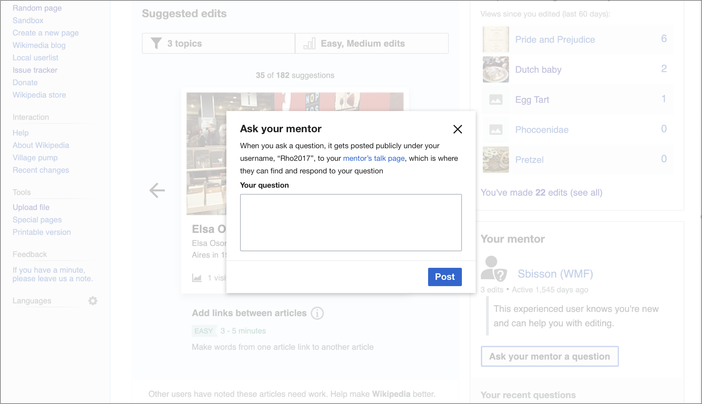

Dialogs
Dialogs are elements that are overlaid on a web page or app in order to present necessary information and tasks. Dialogs are also sometimes referred to as modals and overlays.
Using dialogs
Dialogs facilitate communication between the system and user. They perform best when used for urgent decisions or as a workflow within a bigger task as they don’t require loading a new page and keep actions in context. Dialogs can and aim to be disruptive since the user needs to interact with or close the dialog before moving on, and therefore should be used sparingly and only on occasions that necessitate its use.
Designing and Types
There are two basic forms a dialog can take: simple or complex. Simple dialogs are mainly for short messages, confirmations or alerts while complex dialogs help perform a more in depth task.
Simple dialog
A simple dialog contains:
- A title
- Short message. Aim for one or two lines of copy to make these easy and quick to understand.
- A confirmation action
- Dismissive or secondary action (Optional)
- A 'close' icon-only button (X) (Optional)
If the action text is too long, the confirmation action may be stacked above the secondary action.
For left-to-right languages[1] the primary action is on the far right, while for right-to-left languages the primary button is on the far left.
The simple dialog looks and behaves the same between desktop and mobile web. They should never need scrolling behavior and the entire unit should be visible on even the smallest screens.
Complex dialog
A complex dialog contains:
- A title
- A 'close' icon-only button (X) (Optional)
- One confirmation action, with all other actions living within the content of the dialog
- A fixed top and bottom bar
The content within a complex dialog requires more detailed information and interaction from the user, which can be displayed in many forms: tables, tabs, lists, or any other layout found in our style guide.
On desktop, for all left-to-right languages the confirmation action for a complex dialog lives in the bottom right. and for all right to left languages it is located on the bottom left.
On mobile web, the confirmation action lives in the top right (LTR)/top left (RTL), the same implementation as the toolbar, in order to avoid any issues with the virtual keyboard.
Scrolling
If needed, scrolling is allowed in complex dialogs, but should be used sparingly. While scrolling, the top bar bottom border appears and both the top and bottom sections become fixed as content scrolls underneath them.
Closing
A dialog can be dismissed by:
- The close button (X)
- A dismissive action like “Cancel“
- Tapping or clicking anywhere outside of the dialog on the background
Background
Behind every dialog, there is a screen of Base100 (#fff) at 65% opacity. This is to allow continued context while focusing on the dialog.
Shadows
Aside from the full screen complex dialog on mobile web, all dialogs have a drop shadow in order to separate it more clearly from the content below. This shadow is a 25% transparent black with the X axis moved 0 pixels, the Y axis moved 2 pixels, and a 2 pixel blur.
Borders
Excluding full screen dialogs on mobile web, a radius of 2px should be applied to the dialog.
Titles
All dialogs require a title. This should be a short, one line overview of the purpose of the dialog. Avoid truncating the title in order to fit the close or confirmation action (on mobile).
All dialogs are vertically and horizontally centered on the canvas. We aim to keep simple dialogs at a fixed width of 370 dp on desktop while allowing them to use 90% of the width on mobile web. This helps make them the focus of the screen while still allowing a line length that is quick and easy to comprehend.

The width of complex dialogs can be varied, but they should strive to be at least 35% and no more than 75% of the width of the viewport on desktop. You may choose the width that best suits the content and experience you are presenting. All complex dialogs are fullscreen on mobile.
States of dialogs
Buttons may be disabled until a required action is completed.
Loading may be communicated through a 3px tall Accent50 line indicating progress below the title bar and gray box (Base90) to help indicate that content is still being loaded.